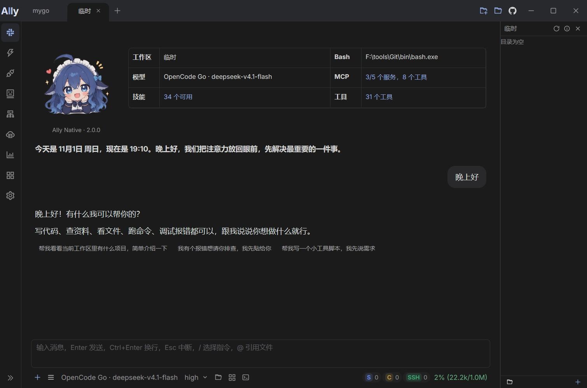
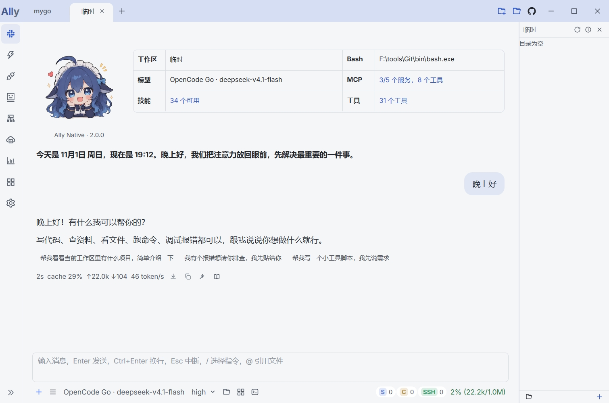

LOCAL / 01
从读懂，到改好。
搜索项目、编辑文件、运行测试。在聊天里查看 Diff、命令输出和失败原因，文件写入有工作区边界与版本校验保护。
src / app.go+12 −4
src / app_test.go+8
修改看得见，下一步有依据。 / 示意
一个轻巧、能动手的 AI 编程伙伴。
理解项目、修改文件、运行命令。从本地工作区到 SSH 远程主机，把下一步交给 Ally。还有一只大肥鱼，陪你把日常开发过得轻松一点。


从读懂一段代码，到完成一次修改。
让对话接上文件、命令和真实的开发流程。
搜索项目、编辑文件、运行测试。在聊天里查看 Diff、命令输出和失败原因，文件写入有工作区边界与版本校验保护。
先选择并授权 SSH 节点，再让 Ally 读写远程文件、执行命令、传输目录。支持本机免密、私钥与密码认证。
多个工作区独立对话，子代理并行处理可拆分的任务。实时查看步骤、工具活动、Token 用量与最终结果。
支持 Chat Completions、Responses、Anthropic Messages 与兼容服务，以及 ChatGPT 登录。每个工作区独立选择。
支持 stdio、SSE 与 Streamable HTTP。配置服务，再选择向新会话开放的工具。
发现项目与用户目录中的技能，按需加载操作指南与引用文件。全局记忆保存跨项目知识。
管理 Todo、定时任务与后台进程。任务中心查看日志，定时任务在重启后继续调度。
全文总结或本地裁剪压缩上下文，仪表盘展示 Token 趋势。思考强度与输出上限可按模型配置。
HTML 与 Mermaid 预览、JS/TS 插件、本地 HTTP API。支持图片输入与生成预览，Windows 可配置语音输入。
今天，也一起把事情做好。
她是欢迎页上的小伙伴，也能住到桌面上。忙时陪你工作，任务完成后提示耗时；空下来摸摸头，让开发日常多一点温度。
新用户默认开启。可在「设置 → 通用 → 外观」调整或关闭。闲聊使用本地短句，不会自动调用模型。
下载适合你的版本，连接模型服务，
打开项目就可以开始。
解压后运行 Ally.exe。
支持自动下载更新，安装后重新打开。
将 Ally.app 拖入「应用程序」。
支持自动下载更新与 DMG 替换。
下载对应架构的压缩包。
支持版本检测，更新需手动下载替换。
所有安装包均来自 GitHub Releases。首次在 macOS 打开遇到拦截？见下方常见问题。
启动 Ally，选择项目目录作为工作区。
在「模型」页配置 API，或选择 ChatGPT 登录。
在输入框下选择模型，然后发送你的任务。
Ally 是连接模型与开发工具的桌面助手，需要配置你使用的模型服务，或登录已授权的 ChatGPT 账号。模型调用的费用、额度与能力取决于对应服务，Ally 可为不同工作区选择不同模型。
Ally Native 沿用原版的 ~/.ally_agent 配置与会话数据。原生界面使用 Go 与 MyGo 绘制，常规页面、文件浏览与编辑都在原生桌面内完成。
先添加 SSH 节点，再在当前工作区勾选授权。Ally 会从授权节点列表中选择目标，通过远程工具读写文件、执行命令和传输资源。节点支持本机免密、私钥与密码认证。
应用使用 ad-hoc 签名且未做公证。确认安装包来自项目的 GitHub Releases 后，在「系统设置 → 隐私与安全性」中选择「仍要打开」。DMG 中将 Ally.app 拖入「应用程序」后再启动。
如果 Ally 帮到了你，欢迎给项目一个 Star，或分享你的建议。